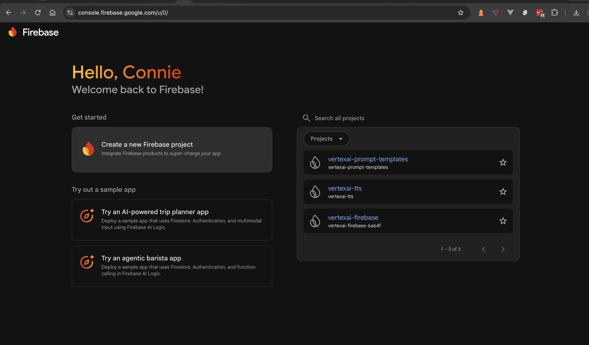
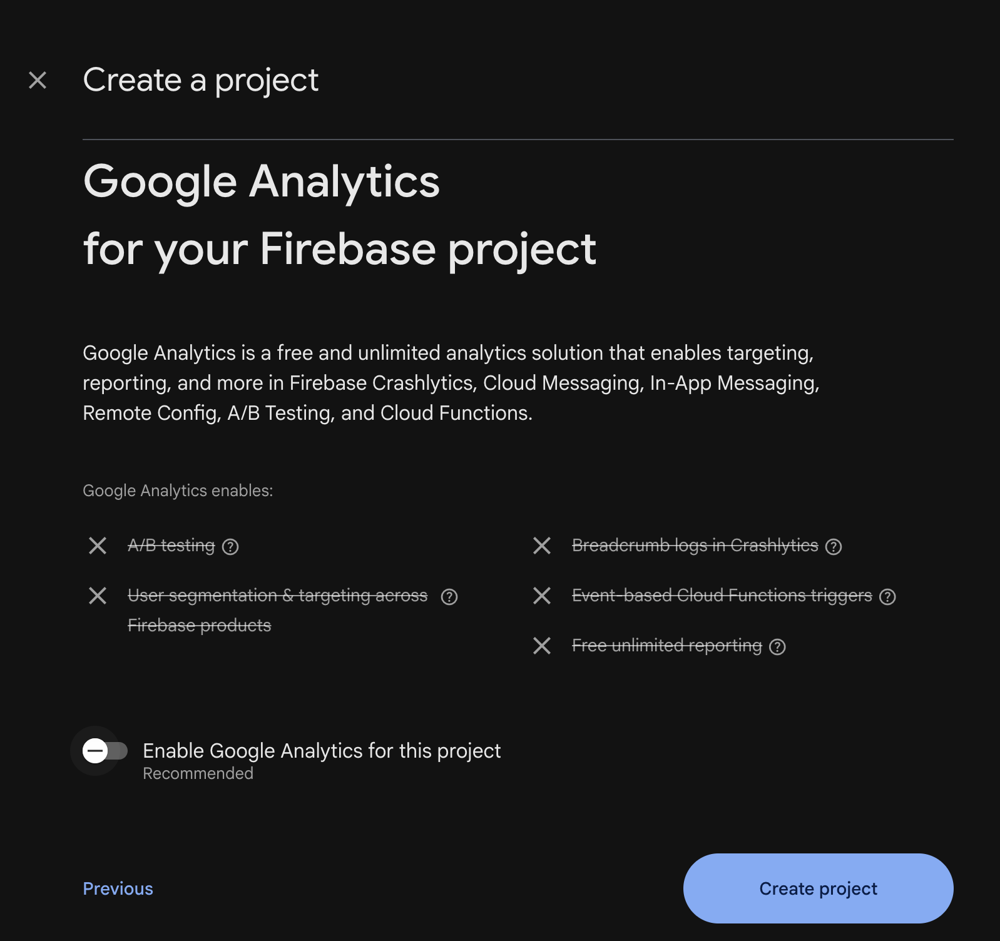
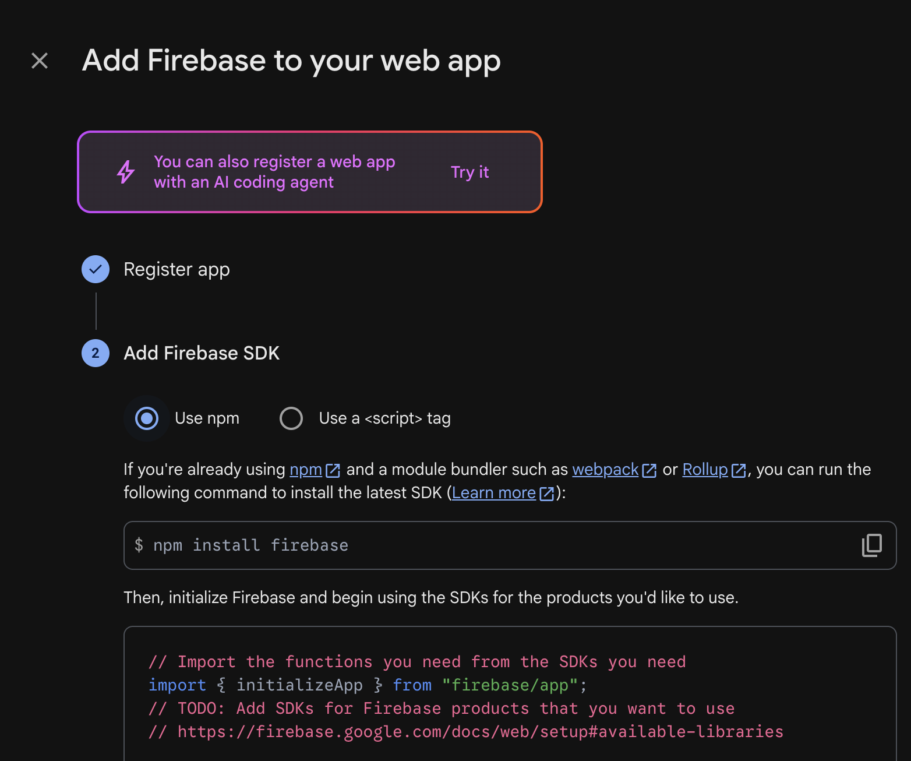
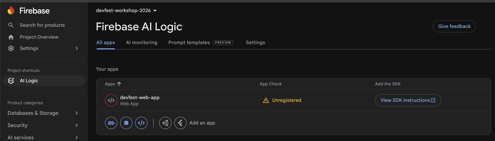
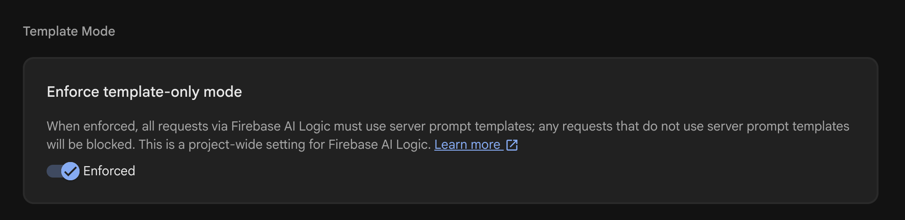

1. Overview and Prerequisites
Duration: 1 minute
Welcome to the Build an Angular Web App with Firebase AI Logic Server Prompt Templates workshop! This workshop is split into two parts:
- Part 1: Firebase Configuration — Set up a Firebase project, configure billing with Google Cloud Credits, enable Firebase AI Logic (in template-only mode) and App Check, create Server Prompt Templates, and configure Firebase Remote Config.
- Part 2: Angular Web App Integration — Connect an Angular application to Firebase AI Logic and Remote Config to invoke your Server Prompt Templates securely from the client.
Prerequisites
- Node.js 24+ installed (https://nodejs.org/)
- A Gmail / Google account
- Redeem the Google Cloud Credit provided for this workshop before starting the Firebase billing setup.
2. Part 1: Create a Firebase Project and Web App
Duration: 3 minutes
- Go to the Firebase Console at https://console.firebase.google.com/u/0/ to create a new Firebase project.

- Create a Firebase project, enable Gemini in Firebase and disable the Google Analytics



- Once your project is created, add a new Web App (
</>) to your Firebase project from the Project Overview page.

- After adding Firebase to the web app, a Firebase configuration is created that we will use to initialize a Firebase app in the Angular app.

3. Part 1: Enable Firebase AI Logic
Duration: 1 minutes
Enable Firebase AI Logic
- In the Firebase Console sidebar, navigate to Firebase -> AI Services -> AI Logic -> Get Started.
- Enable the Gemini Developer API provider. Click the Get started with this API button
 3. Keep the default settings to enable the API, AI Monitoring, and finish
4. The overview of **Firebase AI Logic** displays the web app.
3. Keep the default settings to enable the API, AI Monitoring, and finish
4. The overview of **Firebase AI Logic** displays the web app.
- Click the Settings tab, scroll down to Enforce template-only mode to enable template-only mode so the client app can only execute pre-registered Server Prompt Templates.

4. Part 1: Enable App Check
Duration: 5 minutes
Enable App Check
- In the Firebase Console sidebar, navigate to Firebase -> Security -> App Check.
- Click Set up and configure the following protections:
- Baseline protection: Select Enforced
- Replay protection: Select Enforced
- Confirmation: Confirm and save your App Check configuration
5. Part 1: Assign Billing Account to the Firebase Project
Duration: 5
To use Gemini models and features in Firebase AI Logic, link your redeemed Google Cloud Credits billing account to your Firebase project:
- Navigate to the Google Cloud Billing Projects page at https://console.cloud.google.com/billing/projects.
- Locate your Firebase project, click the three dots (
⋮) action menu at the end of the row, and choose Change billing. - Change the billing account to your Google Cloud Credits billing account and confirm.
6. Part 1: Create Server Prompt Templates
Duration: 15
In the Firebase Console, navigate to Firebase AI Logic -> Prompt Templates:
- Click Create Template -> Template.
- Under Gemini API Provider, choose Gemini Developer API from the dropdown.
You will create three Server Prompt Templates. For each template, copy the code blocks below into the corresponding sections in the Firebase Console UI:
- Copy the Configuration (
yaml) block into the Configuration section. - Copy the Prompt text block into the Prompt text section.
- Copy the Prompt input (
json) block into the Prompt input section.
a) Country Animal Guide (country-animal-guide-v0-0-1)
- Configuration:
model: "gemini-nano-banana-2.1"
config:
candidateCount: 1
thinkingLevel: MINIMAL
includeThoughts: false
tools:
- googleSearch
responseModalities: ["IMAGE"]
location: global
input:
schema:
country: string, The country name.
- Prompt text:
A hyper-realistic 3D animal guide infographic poster for {{country}}. The country shape is rendered as a raised, textured terrain map floating on a clean light gray surface. The most iconic native wild animals of {{country}} are placed as highly detailed, photorealistic 3D sculpted miniature figures at their correct geographic habitats across the map — each animal must be anatomically accurate, instantly recognizable, and true to its natural environment. The terrain biomes change across the map to reflect each animal’s habitat. White paths connect the key regions across the terrain. Around the map, floating 3D decorative props are scattered: a pair of binoculars, a nature field journal, animal paw prints, a magnifying glass, and a postage stamp seal reading "Animal Guide to {{country}}" The national flag of {{country}} is shown as a small realistic folded flag in the upper right corner. Each animal has a bold black label on the map, and beside the map, each animal has a neat checklist showing: common name, scientific name, conservation status, and habitat region — in clean sans-serif typography. A large bold title at the top reads: “ANIMAL GUIDE TO {{country}}" in black uppercase typography with the word {{country}} in heavy bold. The overall aesthetic is premium editorial nature content — soft studio lighting, photorealistic 3D render, white/light gray background, clean layout.
Apply this aspect ratio to the image: 1:1.
Apply this resolution to the image: 512.
- Prompt input:
{
"country": "Malaysia"
}
Verify and Test:
- Choose Gemini Developer API from the Gemini API Provider dropdown.
- Click Create formatted test request to verify the request.
- Click Run Prompt test to get the result.
b) Country Food Guide (country-food-guide-v-0-0-1)
- Configuration:
model: "gemini-nano-banana-2.1"
config:
candidateCount: 1
thinkingConfig:
thinkingLevel: MINIMAL
includeThoughts: false
tools:
- googleSearch
responseModalities: ["IMAGE"]
location: global
input:
schema:
country: string, The country name.
- Prompt text:
Vintage editorial food poster, "Top 9 Dishes of {{country}}", aged parchment beige background, 3x3 grid layout of hyper-realistic photographed dishes each on a rustic ceramic plate, bold black and dark red serif typography for title, large country name in distressed slab-serif font, national flag top-left corner, iconic country landmarks illustrated in vintage engraving style as decorative header and footer borders, small cultural icon illustrations in corners (traditional figures, instruments, architecture), diamond ornamental dividers between sections, bold dish name caption beneath each photo, warm golden lighting on food, ultra-detailed, editorial infographic style.
Apply this aspect ratio to the image: 2:3
Apply this resolution to the image: 512.
- Prompt input:
{
"country": "Canada"
}
Verify and Test:
- Choose Gemini Developer API from the Gemini API Provider dropdown.
- Click Create formatted test request to verify the request.
- Click Run Prompt test to get the result.
c) Summarize YouTube URL (summarize-youtube-url-v-0-0-1)
- Configuration:
model: "gemini-3.8-flash"
config:
candidateCount: 1
thinkingConfig:
thinkingLevel: high
includeThoughts: false
location: global
responseModalities: ["TEXT"]
input:
schema:
url: string
mime_type: string
output:
format: json
schema:
summary: string, summary of the URL
topic?: string, topic of the URL
tags(array, list of tags relevant to the video): string
- Prompt text (contains system instruction and user prompt):
{{role "system"}}
You are an expert at summarizing videos, finding the topic, and generating tags relevant to their content. The user provides the URL and MIME type below.
{{role "user"}}
{{media url="url" mimetype="mime_type"}}
- Prompt input:
{
"mime_type": "video/mp4",
"url": "https://www.youtube.com/watch?v=BHGTA6ZEls4"
}
Verify and Test:
- Choose Gemini Developer API from the Gemini API Provider dropdown.
- Click Create formatted test request to verify the request.
- Click Run Prompt test to get the result.
7. Part 1: Configure Firebase Remote Config
Duration: 5
In the Firebase Console sidebar, navigate to Firebase -> Remote Config and add two parameters to store your Server Prompt Template IDs:
a) summarizeTemplateId
- Parameter name (key):
summarizeTemplateId - Data type:
String - Description:
Summarize Template Id - Default value:
summarize-youtube-url-v-0-0-1
b) countryTemplateId
- Parameter name (key):
countryTemplateId - Data type:
String - Description:
Country Prompt Template Id - Default value:
country-food-guide-v-0-0-1
Click Publish changes in Firebase Remote Config to make the parameters available to your application.
8. Part 2: Angular Application Integration
Duration: 15
With the Firebase project, AI Logic Server Prompt Templates, App Check, and Remote Config parameters configured, you are ready to connect the Angular web application in Part 2 of this workshop.